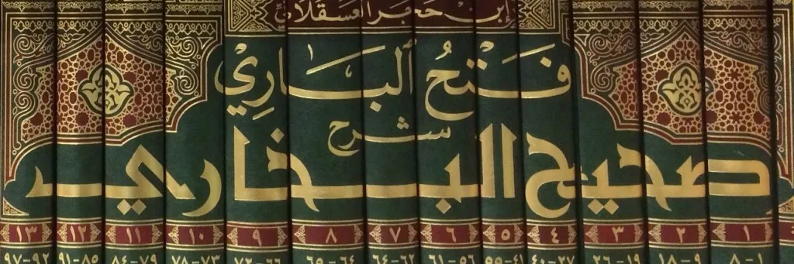
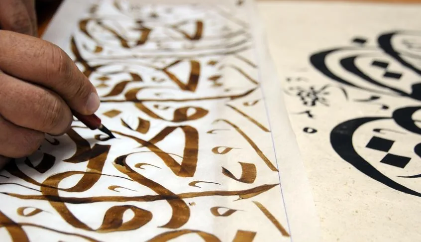
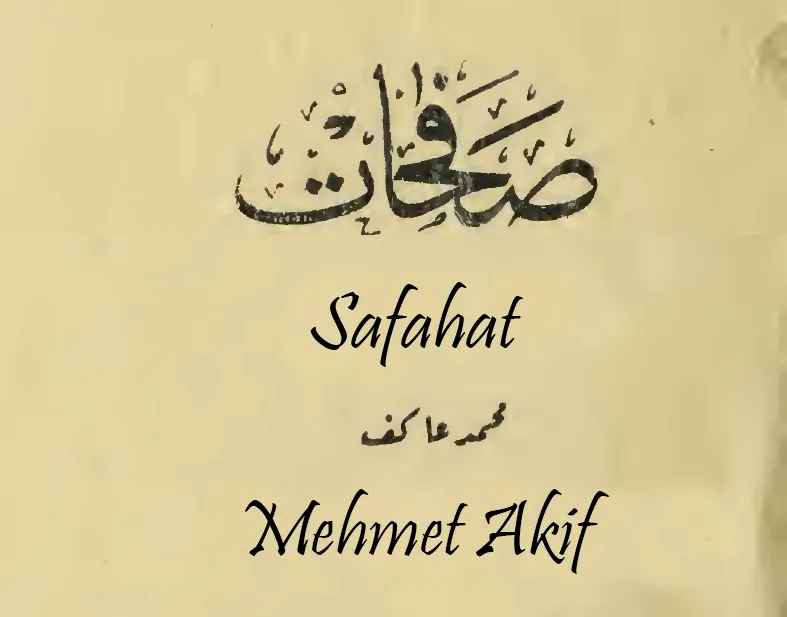

Untersuchung der Hadithe


Im zweiten Kapitel haben wir anhand der Koranverse gesehen, dass der Koran als einzige islamische Quelle ausreichend ist und keine weiteren Quellen für Fragen bezüglich dem Islam benötigt werden. In diesem Kapitel werden wir die Methoden, die bei der Sammlung der Hadithe verwendet wurden, und die Tatsache, dass der Prophet Muhammad die Niederschrift von Hadithen nicht angeordnet hat, genauer untersuchen. Dadurch werden wir erneut verdeutlichen, warum es neben dem Koran keine zweite religiöse Quelle geben kann. In den Kapiteln 6, 7 und 8 werden wir uns die Widersprüche der Hadithe, die als Verleumdungen gegen den Propheten Muhammad überliefert wurden, sowohl im Vergleich zum Koran als auch zur Logik und in sich selbst ansehen. Am Ende werden wir die Konsequenzen dieser Widersprüche betrachten und erkennen, welches Unheil es bedeutet, nach weiteren Quellen neben dem Koran zu suchen. Das Konzept der „Sunna“ wird im 16. Kapitel gesondert behandelt.
Das Verbot des Propheten, Hadithe aufzuschreiben
Wir beginnen, die Hadithe in der Zeit des Propheten Muhammad zu untersuchen, und arbeiten uns schrittweise bis in die heutige Zeit vor. Es wird selbst von den Hadithgelehrten anerkannt, dass der Prophet das Aufschreiben von Hadithen nicht erlaubt und die Aufzeichnung seiner eigenen Worte verboten hat. In zwei der „zuverlässigsten“ Hadithsammlungen, Sahih Muslim51 und dem Musnad des Ahmad ibn Hanbal52, dem Begründer der hanbalitischen Rechtsschule, wird ein Hadith überliefert, der bestätigt, dass der Prophet das Schreiben seiner Worte untersagte: „Schreibt nichts von mir auf außer dem Koran. Wer etwas anderes als den Koran von mir aufgeschrieben hat, soll es vernichten.“53 Ein Hadith bei Darimi54 lautet: „Die Gefährten baten den Gesandten Gottes um Erlaubnis, seine Worte aufzuschreiben, aber sie erhielten keine Erlaubnis.“55 Ein weiterer Hadith bei al-Khatib56 lautet: „Als wir Hadithe schrieben, kam der Prophet zu uns und fragte: ‚Was ist das, was ihr schreibt?’ Wir antworteten: ‚Die Hadithe, die wir von dir gehört haben.’ Der Prophet sagte: ‚Wollt ihr ein anderes Buch als das Buch Gottes? Die früheren Völker sind vom Weg abgekommen, weil sie neben dem Buch Gottes andere Bücher geschrieben haben.’“57 Auch bei Tirmidhi finden wir:
In den Büchern, die sich mit den Hadithen befassen, sowie in den Büchern, die die Hadithe als Quelle des Islam betrachten, wird berichtet, dass der Prophet Muhammad das Aufschreiben seiner eigenen Worte verboten hat, und es wird argumentiert, dass dies geschehen sei, um eine Vermischung der Hadithe mit dem Koran zu verhindern. Doch diejenigen, die die sunnitischen Rechtsschulen verteidigen, behaupten, dass auch aus den Hadithen, ähnlich wie aus dem Koran, religiöse Vorschriften abgeleitet werden müssen. Das heißt, sie betrachten die Hadithe genauso wie den Koran als Quelle des Islam. Aber wenn die Hadithe eine der islamischen Quellen wäre, wie konnte der Prophet dann das Aufschreiben der Hadithe verbieten? Wäre dies nicht eine Gefahr, dass die Menschen den Islam unvollständig lernen und dass Lügen in seine Worte eingefügt oder seine Worte vergessen würden? Im Koran wird das Schreiben mit dem Stift betont, und es wird geraten, ein Testament oder Schulden aufzuschreiben.59 Wenn das Schreiben im Koran so wichtig ist und die Hadith-Bücher angeblich die Hauptquelle des Islam sind, wie konnte es dann sein, dass das Aufschreiben der Hadithe nicht erlaubt wurde? Beachten Sie, dass bereits die Tatsache, dass der Prophet Muhammad das Aufschreiben seiner Hadithe nicht förderte, aus der Sicht der Hadithanhänger problematisch ist. Doch in den Überlieferungen heißt es noch viel deutlicher, dass der Prophet Muhammad das Aufschreiben seiner Worte sogar verbot.
Wenn der Prophet Muhammad die Aufzeichnung einer angeblich weiteren islamischen Quelle verhindert hat, hätte er dann nicht auch verhindert, dass der Islam vollständig und korrekt vermittelt wird? Wie wir später sehen werden, sind viele Hadithe gefälscht worden. Wenn die Hadithe eine Quelle des Islam wären, hätte der Prophet sie doch aufschreiben lassen und damit weitgehend verhindert, dass sich zehntausende Lügen in die Hadithe mischen konnten. Der Koran sagt jedoch eindeutig, dass der Koran allein als Quelle des Islam ausreicht und die einzige gültige Quelle ist. Wer könnte das besser verstehen als der Prophet Muhammad selbst? Wie wir sehen, war die Sunna des Propheten – also seine Handlungsweise – nicht, die Hadithe als Ergänzungen zum Koran niederschreiben zu lassen, sondern sie überhaupt nicht schreiben zu lassen. Der Prophet hat nicht nur keine Hadithe aufschreiben lassen, sondern dies sogar ausdrücklich verboten. Als vorausblickender Prophet, der die menschliche Neigung zur Überbetonung von Details, zur Vergötterung von Propheten und zur Spaltung in Sekten erkannte, warnte er vor solchen Handlungen. Die heutige Situation zeigt einmal mehr, wie recht er mit seiner Voraussicht hatte.
Die numerische Mannigfaltigkeit der Hadithe
Ahmed Amin macht eine kluge Beobachtung zur Dimension der Hadith-Fabrikation: „Es ist bemerkenswert, dass die Hadithe, wenn wir sie untersuchen, die Form einer Pyramide haben. Die Spitze der Pyramide stellt die Zeit des Gesandten Gottes dar, und je weiter man nach unten geht, desto breiter wird die Pyramide. Wenn wir an der Basis der Pyramide ankommen, sehen wir, dass die Anzahl der Hadithe in der Zeit des Propheten deutlich geringer war als in späteren Epochen. Vernünftigerweise sollte es jedoch umgekehrt sein. Denn diejenigen, die dem Propheten am nächsten standen, wussten am meisten über die Hadithe (die Aussagen des Propheten). Mit ihrem Tod sollte die Zahl derer, die die Hadithe kannten, abnehmen, und so sollte sich die Pyramide in umgekehrter Form entwickeln. Aber wir stellen fest, dass in der Zeit der Umayyaden die Anzahl der Hadithe weit größer war als in der Zeit des Propheten.“60 Einige Hadith-Gelehrte behaupten, dass es bis zu zwei Millionen Hadithe gibt. Es wird berichtet, dass al-Buchari, der als der „zuverlässigste“ Sammler von Hadithen gilt, seine Sammlung aus 600.000 Hadithen auswählte,61 während Muslim seine Sammlung aus 300.000 Hadithen zusammenstellte.62 Abu Dawud soll aus 500.000 Hadithen ausgewählt haben,63 Malik, der Gründer einer Rechtsschule, soll aus 100.000 Hadithen für sein Muwatta ausgewählt haben,64 und Ibn Hanbal soll seine Sammlung Musnad aus 750.000 Hadithen zusammengestellt haben.65 Wenn wir bedenken, dass der Prophet Muhammad etwa 23 Jahre als Prophet tätig war und dies nach dem gregorianischen Kalender berechnen, ergibt sich eine ungefähre Anzahl von 23 x 365 = 8.395 Tagen als Prophet. Wenn behauptet wird, dass es insgesamt zwei Millionen Hadithe gibt, bedeutet dies, dass dem Propheten für jeden einzelnen Tag seiner Prophezeiung über 200 Hadithe zugeschrieben werden. Wenn wir jemanden bitten würden, die Aussagen und Handlungen der Person, mit der er oder sie im letzten Jahr am meisten Zeit verbracht hat – sei es der Vater, das Kind, der Ehemann oder die Ehefrau – niederzuschreiben, würden wir, selbst nach einem Jahr, feststellen, dass die Anzahl der Aufzeichnungen im Vergleich zu den überlieferten 200 täglichen Hadithen des Propheten in zwei Jahrhunderten nach seinem Tod zeigt, wie viele davon möglicherweise gefälscht sind. Es wird gesagt, dass alle Verfasser der Hadith-Sammlungen all diese Hadithe auswendig kannten und dann die ihrer Meinung nach „zuverlässigsten“ Hadithe auswählten. Damit die Hadith-Gelehrten jedoch genau sagen konnten, wie viele Hadithe sie kannten, hätten sie alle aufschreiben und zählen müssen, denn es ist unmöglich zu behaupten, 600.000 Hadithe auswendig zu kennen. Wenn wir eine Gruppe Deutschsprachiger fragen, mit wie vielen Wörtern sie Deutsch sprechen, werden die meisten nicht in der Lage sein, eine genaue Zahl zu nennen. Wenn die Zahl jedoch auf 600.000 anwächst, wird es unmöglich, sie im Gedächtnis zu zählen.
Wären Hadithe eine Quelle des Islam, wäre der Islam unvollständig
Muslim selbst erklärt, dass er nicht jeden Hadith, der als „authentisch“ galt, in sein Buch aufgenommen hat.66 Gemäß Muslim sind Hadithe eine Quelle des Islam, doch er hat nicht jeden als wahr erachteten Hadith in sein Werk aufgenommen. Das bedeutet nach seiner Logik, dass der Islam unvollständig wäre. Da es keine Garantie gibt, dass ein Hadith, den Muslim ausgelassen hat, von jemand anderem gesammelt wurde, trägt die traditionelle sunnitische Herangehensweise die Vorstellung einer unvollständigen Religion in sich. Buchari, der ebenfalls die Hadithe als eine Quelle des Islam anerkennt, soll 600.000 Hadithe gekannt und davon 6.000 bis 7.000 – also etwa 1 % – in seine Sammlung aufgenommen haben. Die restlichen 99 % ließ er weg, weil er der Meinung war, dass sie entweder nicht notwendig oder nicht vertrauenswürdig genug seien. Tatsächlich schrieb Buchari selbst, dass die Anzahl der authentischen Hadithe, die er nicht in sein Buch aufnahm, größer sei als die der Hadithe, die er einfügte, einfach weil das Buch nicht zu umfangreich werden sollte. Wenn die Hadithe tatsächlich eine Quelle des Islam wären, dann wären wir vollständig auf Bucharis Urteilsvermögen und Auswahlfähigkeit angewiesen gewesen. Wenn die Hadithe notwendig wären, um den Islam vollständig zu machen, wäre es unmöglich, dass in den ausgelassenen 99 % keine wichtigen Aussagen enthalten wären. Würde man die Hadithe als eine Quelle des Islam betrachten, wäre der Islam unumkehrbar und unheilbar unvollständig. Da Buchari verstorben ist und niemand behaupten kann, die 99 % der Hadithe, die er nicht niederschrieb, zu kennen, wären wir Anhänger einer unvollständigen Religion geworden.
Lassen Sie uns auch die Behauptung prüfen, dass Buchari 600.000 Hadithe gekannt habe, und untersuchen, wie verlässlich diese Behauptung ist. Angenommen, Buchari hätte nichts anderes im Leben getan, nicht geschlafen, und hätte für jeden Hadith – um die Glaubwürdigkeit der Überlieferungskette zu prüfen – zwei Stunden verwendet, dann hätte er allein dafür über 130 Jahre gebraucht. Wenn wir zudem bedenken, dass es manchmal Tage dauerte, um die Zuverlässigkeit eines einzigen Gliedes einer Überlieferungskette zu prüfen, dann hätte die Überprüfung all der Hadithe, die Buchari gekannt haben soll, tausende Jahre gedauert. Kurz gesagt, die Behauptung, dass Buchari und andere Hadith-Gelehrte Hunderttausende von Hadithen kannten und all diese überprüften, um die zuverlässigsten auszuwählen, ist irrational.
Der Koran hingegen ist eine Quelle mit einem klaren Anfang und Ende. Doch die Hadith-Überlieferer vervielfältigten die Hadithe nach dem Prinzip „Ich habe einen gehört“ oder „Es gibt noch einen“. Dass die Hadithe so viele Fälschungen enthalten, liegt zu einem großen Teil daran, dass sie keine klar definierte Quelle sind. Gott sei Dank hat Gott uns keine andere Quelle als den Koran auferlegt. Dank dieser Gnade Gottes sind wir Mitglieder einer vollständigen und vollkommenen Religion. Lasst uns diese fabrizierten Hadithe aus dem Weg räumen, die diejenigen, die uns bewusst oder unbewusst als Angehörige einer unvollständigen, zweideutigen und widersprüchlichen Religion hinstellen, unter Berufung auf den letzten Propheten Muhammad zu legitimieren versuchen und vor den Koran stellen. Nur so kann der Koran, die einzige widerspruchsfreie und vollständige Quelle des Islam, uns erleuchten.
Wie wurden die verbotenen Hadithe zu Büchern zusammengestellt?
Nachdem der Prophet Muhammad die Niederschrift von Hadithen untersagte, wurde diese Haltung auch von den vier Kalifen nach seinem Tod fortgesetzt – von Abu Bakr, Umar, Uthman und Ali. In Kapitel 11 unseres Buches werden wir detailliert aufzeigen, wie die vier Kalifen Versuche, Hadithe zu schreiben, verhinderten und wie sie bereits geschriebene Hadithe verbrannten. Es mag natürlich und unbedeutend erscheinen, dass Zeitzeugen der Ereignisse aus der Zeit des Propheten Muhammad ihre Erlebnisse weitergaben oder dass Menschen, die mit dem Propheten sprachen, diese Gespräche anderen erzählten. Doch die Haltung der Gefährten, die von jedem, der behauptete, etwas vom Propheten Muhammad gehört zu haben, Beweise und Zeugen forderten und das Schreiben solcher Berichte untersagten, zeigt die Weitsicht und das Verantwortungsbewusstsein, das auch nach dem Tod des Propheten fortgeführt wurde. Diese Weitsicht ermöglichte es, die potenziellen Verfälschungen des Islam durch Hadithe zu verhindern und zeigte, dass selbst scheinbar harmlose Handlungen langfristig zur Degeneration des Glaubens führen könnten. Die vier Kalifen erlaubten es nicht, Aussagen des Propheten niederzuschreiben, selbst wenn sie wussten, dass diese Aussagen korrekt waren – und das, obwohl diese Aussagen zu diesem Zeitpunkt noch frisch im Gedächtnis waren. Wenn jemand behauptet, dass Hadithe in dieser Zeit doch niedergeschrieben wurden, dann fragt ihn: „Wo sind diese Bücher heute?“ Niemand wird euch etwas vorzeigen können.
Al-Harawi67 sagte: „Weder die Sahaba68 (die den Propheten gesehen haben) noch die Tabi’un (die den Propheten nicht gesehen, aber die Sahaba gekannt haben) schrieben Hadithe nieder, sondern gaben sie lediglich mündlich weiter. Bis auf ein paar einfache schriftliche Fragmente gab es keine Ausnahmen. Als man befürchtete, dass das Wissen verloren gehen und die Gelehrten aussterben könnten, befahl Umar ibn Abd al-Aziz69 Abu Bakr al-Hazm70 per Brief, Hadithe zu sammeln und niederzuschreiben.“ Als der neue Kalif Yazid ibn Abd al-Malik jedoch an die Macht kam, entließ er Abu Bakr al-Hazm und dessen Mitarbeiter. Der nächste Kalif, Hisham, setzte den Gelehrten Az-Zuhri ein, um die Hadithe zu sammeln. Mahmoud Abu Rayya beschreibt all diese Entwicklungen und weist auf den Druck hin, der damals ausgeübt wurde: „Die Tabi’un, die aufgefordert wurden, die Hadithe zu sammeln, taten dies nur unter Zwang, denn die bisherige Praxis und das Verbot der Sahaba, Hadithe zu sammeln, erschwerte ihnen diesen Schritt erheblich. Az-Zuhri sagte: ‚Wir mochten es nicht, Hadithe aufzuschreiben, aber die Herrscher zwangen uns dazu.’“71
Die traditionelle sunnitische Sichtweise sieht die umayyadische Periode nicht einmal als geordnete Phase der Hadithsammlung an. Während dieser Zeit wurden Hadithe, Jurisprudenz, Poesie und Nachrichten72 unsortiert und ohne Prüfung ihrer Richtigkeit niedergeschrieben. Al-Ghazali73 berichtete, dass die Tabi’un das Aufschreiben von Hadithen missbilligten und stattdessen sagten, dass man die Hadithe auswendig lernen sollte, ebenso wie die nachfolgenden Generationen.74 Die erste Sammlung von Hadithen in einem eigenständigen Werk fand erst zur Zeit der Abbasiden statt. Das einzige überlieferte Werk dieser Art, das aus der zweiten Hälfte des zweiten Jahrhunderts stammt, ist der Muwatta von Malik, dem Gründer der malikitischen Rechtsschule.75 Kurz danach erschien der Musnad von Ahmad ibn Hanbal, dem Gründer der hanbalitischen Rechtsschule, der im Jahr 241 (nach der Hidschra, der Auswanderung nach Medina) verstarb. In diesen Werken – sowohl in Maliks Muwatta als auch in Ibn Hanbals Musnad – sehen wir, dass Hadithe ohne Unterscheidung zwischen „authentischen“ und „schwachen“ Hadithen, ohne systematische Prüfung ihrer Richtigkeit, inmitten der Flut von Überlieferungen gesammelt wurden.
Vor Buchari, der im dritten Jahrhundert nach der Hidschra lebte, wurde noch nicht einmal der Versuch unternommen, Hadithe nach ihrer Glaubwürdigkeit zu sortieren. Die Trennung in „authentische“ und „schwache“ Hadithe begann erst mit Buchari. Wenn man sich die Hadithe genauer anschaut, wird klar, dass dieser Versuch nicht den gewünschten Erfolg brachte. Die berühmten sechs Hadith-Sammlungen (Kutub al-Sitta [Die sechs Bücher]) wurden von ihren Autoren in verschiedenen Zeiträumen des dritten Jahrhunderts nach der Hidschra verfasst: Buchari verstarb im Jahr 256, Muslim im Jahr 261, Tirmidhi im Jahr 279, Abu Dawud im Jahr 275, an-Nasa´i im Jahr 303 und Ibn Madscha im Jahr 273. Die schiitischen Hadith-Bücher sind völlig anders, und sowohl Sunniten als auch Schiiten erkennen die Hadith-Sammlungen der jeweils anderen Gruppe nicht an. Die Entstehung der schiitischen Hadith-Sammlungen fällt in eine noch spätere Zeit. Die berühmten schiitischen Hadith-Gelehrten al-Kulaini, Ibn Babawayh und Abu Dschafar at-Tusi76 verstarben in den Jahren 329, 381 und 460 (nach der Hidschra).
Stellen wir uns vor, eine Aussage des preußischen König Friedrich Wilhelm III. (der 1840 verstarb) wäre in keinem Geschichtsbuch festgehalten worden und wäre nur durch mündliche Überlieferung an uns weitergegeben worden. Wie zuverlässig wäre diese Aussage? Noch dazu, wenn behauptet würde, sie stamme aus einer einzigen Überlieferungskette von Person zu Person bis hin zu König Friedrich Wilhelm III.? Wer würde so etwas glauben? Doch die Zeitspanne zwischen dem Tod von Friedrich Wilhelm III. und heute ist viel kürzer als die Zeitspanne zwischen dem Tod des Propheten und der Niederschrift der Kutub al-Sitta. Die Zeitspanne, in der einige dieser berühmten Hadith-Bücher niedergeschrieben wurden, war sogar doppelt so lang. Aus vielen Gründen, die wir in Kapitel 5 noch näher betrachten werden, waren bereits zehntausende Hadithe gefälscht, als die berühmten Hadith-Gelehrten ihre Bücher zusammenstellten. Diese Bücher enthalten viele Hadithe, die dem Koran, der Logik und einander widersprechen, und sie widersprechen sich sowohl in ihren Methoden als auch untereinander. Das zeigt deutlich, welches Unglück es bedeutet, eine andere Quelle als den Koran zu suchen. Der bereits erwähnte „Pyramiden-Effekt“ hatte zu diesem Zeitpunkt durch die Vielzahl an Fälschungen eine noch größere Dimension erreicht.
Die Schäden des Irrglaubens an die Unfehlbarkeit der Weggefährten (Sahaba) bei der Hadithüberlieferung
Der Begriff „Sahaba” bezieht sich auf alle Personen, die den Propheten Muhammad zu Lebzeiten gesehen haben, selbst wenn sie nie direkt mit ihm gesprochen haben und auch nur aus der Ferne. Diese Definition stammt von Buchari und ist weithin akzeptiert. In den berühmten Hadith-Büchern wird unter dem Begriff „Dscharh wa Tadil”77 die Prüfung der Glaubwürdigkeit, des Gedächtnisses und des Glaubens der Überlieferer der Hadithe beschrieben. Allerdings würde niemand lange genug leben, um die Wahrhaftigkeit, das Gedächtnis und die anderen Eigenschaften der Tausenden von „dieser, jener und derjenige“, die in den Hadith-Überlieferungsketten vorkommen, bis zum 3. Jahrhundert nach der Hidschra zu prüfen. Abu Shama78 sagt dazu: „Die Meinungen über die Hadith-Überlieferer sind so widersprüchlich, dass ein und derselbe Überlieferer von einigen als ‚Fürst der Gläubigen’ und von anderen als ‚der größte Lügner unter den Menschen’ bezeichnet werden konnte.“ Zum Beispiel wird Ikrima79 von Buchari und vielen berühmten Hadith-Gelehrten als sehr zuverlässiger Überlieferer betrachtet, während Muslim ihn für einen Lügner hält. Solche Beispiele gibt es viele. Ein besonders bemerkenswertes Beispiel ist, dass Buchari, der Autor des berühmtesten Hadith-Buches, den Gründer der am weitesten verbreiteten Rechtsschule, Abu Hanifa, als „unsicher“80 bezeichnet und nicht einen einzigen Hadith von ihm überliefert. Aus Sicht des bekanntesten Hadith-Gelehrten gilt der Gründer der größten Rechtsschule als unzuverlässig, während in der traditionellen, blindgläubigen Denkweise beide als „die vertrauenswürdigsten und heiligsten“ Personen betrachtet werden. Die widersprüchlichen Erklärungen zu Dscharh und Tadil, also der Prüfung der Glaubwürdigkeit der Überlieferer, sind mindestens genauso zahlreich wie die Widersprüche in den Hadithen selbst. Da die meisten dieser Diskussionen unnötig und langweilig sind, gehen wir hier nicht weiter darauf ein.
Alle Hadithe führen ihre Überlieferungsketten zuerst zu den Weggefährten zurück, bevor behauptet wird, dass diese vom Propheten selbst gehört wurden. Die Personen in den Ketten nach den Weggefährten werden zumindest einer Diskussion unterzogen, selbst wenn es keine klaren Ergebnisse gibt. Sobald jedoch der Name eines Weggefährten genannt wird, wird die Aussage, die angeblich von diesem Weggefährten stammt, ungeprüft als wahr akzeptiert. Nirgendwo im Koran steht, dass jedem, der den Propheten gesehen hat, automatisch zu vertrauen sei. Im Gegenteil: Der Koran kritisiert einige derjenigen, die den Propheten umgaben und sich als Muslime bezeichneten.81 Im Koran wird auch erwähnt, dass sich Heuchler (arab. munafiqun) unter die Muslime gemischt haben. In Koran 9:101 steht, dass nicht einmal der Prophet alle Heuchler seiner Zeit kannte. Wie könnten die Hadith-Gelehrten dann wissen, wer diese Heuchler waren? Wie können sie garantieren, dass die Personen, von denen sie die Hadithe überliefert haben, nicht zu diesen Heuchlern gehörten? Oder sollten wir glauben, dass diese Rechtsschulen 200 Jahre nach dem Tod der Heuchler plötzlich wussten, wer sie waren, während der Prophet selbst es nicht wusste? Nach dem Tod des Propheten kämpften einige Weggefährten gegeneinander und beschuldigten sich gegenseitig des Unglaubens.82 Das zeigt, dass nicht jedem zu trauen ist, der behauptet, ein Weggefährte zu sein. Doch die Mentalität, die die Weggefährten als unfehlbar betrachtet, hat in den Überlieferungsketten zahlreiche falsche und widersprüchliche Beurteilungen vorgenommen, indem sie die Weggefährten kollektiv als glaubwürdig betrachtete und damit einen fundamentalen Fehler beging. Wie der Forscher G.H.A. Juynboll83 betonte: „Wenn die Behauptung, dass alle Weggefährten glaubwürdig seien, als falsch erwiesen wird, bricht das gesamte Fundament der Hadith-Überlieferung zusammen.“ Im 12. Kapitel werden wir uns einige Hadith-Fälscher genauer ansehen und dieses Thema detailliert untersuchen.
Die Auswirkungen der sinngemäßen Überlieferung von Hadithen
Im Prozess der Überlieferung von Hadithen sollten wir nicht vergessen, dass Hadithe sowohl im Wortlaut als auch in der Überlieferungskette über Jahrhunderte hinweg auswendig gelernt und über Berge, Täler und Wüsten von Mund zu Mund weitergegeben wurden. Selbst wenn wir alle zuvor erwähnten bewussten Fälschungen und den Mangel an Überlieferungsketten bei einigen Hadithen ignorieren und annehmen würden, dass alle Überlieferungsketten korrekt und alle Überlieferer guten Willens waren, könnten wir dennoch nicht behaupten, dass die Hadithe zuverlässig wären.
Ein Großteil der Menschen, die nicht genügend Wissen über Hadithe haben, glaubt fälschlicherweise, dass die Hadithe in exakt dem Wortlaut, wie sie vom Propheten Muhammad gesprochen wurden, bis zu uns überliefert worden sind. Dabei behaupten nicht einmal die Hadithgelehrten, dass die Hadithe in genau dem Wortlaut überliefert wurden, wie sie ursprünglich gesprochen wurden. Sowohl Buchari als auch viele andere Hadithgelehrte betonten, dass es ausreichend sei, die Bedeutung des Hadiths zu bewahren, und dass es nicht zwingend erforderlich sei, den genauen Wortlaut auswendig zu lernen.84 Dies führte jedoch dazu, dass viele ihre eigenen Ansichten in die Hadithe einbrachten. Menschen, die den Inhalt der Hadithe nicht vollständig verstanden hatten und nicht einmal erkannten, dass sie diesen nicht verstanden hatten, verzerrten den Text und damit auch seine Bedeutung. Jeder Überlieferer, der möglicherweise nicht die Gedächtniskraft hatte, den genauen Wortlaut zu behalten, überlieferte die Hadithe so, wie er sich daran erinnerte. Dies führte zwangsläufig zu Bedeutungsveränderungen im Laufe der Überlieferung. Trotz all dieser Schwachstellen hielten sowohl Buchari als auch die beiden größten sunnitischen Rechtsschulen, Hanafiten und Schafiiten, vertreten durch Abu Hanifa und al-Schafi‘i, die sinngemäße Überlieferung für ausreichend.
Die größte Ansprache des Propheten an die größte Versammlung, die sogenannte Abschiedspredigt (al-Khutba al-Wada), wird von den Hadithgelehrten als ein Ereignis betrachtet, bei dem über hunderttausend Menschen anwesend waren. Wenn wir nun sehen, wie die verschiedenen Versionen dieser Predigt in den Hadithen voneinander abweichen, wird deutlich, wie selbst bei diesem als „sichersten“ Hadith Fälschungen durch sinngemäße Überlieferung und Hadithfälschungen eingeflossen sind.
Ein weiteres Problem, das zu erheblichen Bedeutungsveränderungen führen kann, ist das Nichthören des Anfangs oder Endes eines Hadiths. Als Abu Huraira85 beispielsweise den Propheten mit den Worten zitiert haben soll: „Unglück gibt es in drei Dingen: im Haus, in der Frau und im Pferd”, soll Aischa86 widersprochen haben: „Ich schwöre bei Gott, dass der Gesandte Gottes so etwas nie gesagt hat. Er sagte: ‚Die Leute aus der Zeit der Unwissenheit (Dschahiliyya) pflegten zu sagen: Unglück gibt es in drei Dingen: im Haus, in der Frau und im Pferd.’“ Dies ist ein Beispiel dafür, welche fatalen Folgen die sinngemäße Überlieferung von Hadithen haben kann, wenn man deren Anfang, Ende oder die Umstände nicht übermittelt.
Aufgrund all dieser Probleme sind sich die Hadithgelehrten bei vielen Hadithen nicht einig. Buchari betrachtet viele Hadithe von Muslim als falsch, und Muslim hält viele Hadithe von Buchari für fehlerhaft.87 Besonders die vier Begründer der sunnitischen Rechtsschulen – Abu Hanifa, Schafi‘i, Malik und Hanbal – nahmen keine kategorische Unterscheidung zwischen „sahih” (authentisch), „daif” (schwach) oder „hasan” (gut) vor. Sie bauten ihre Rechtsschulen auf Hadithen, die ihrer Meinung nach glaubwürdig waren, und berücksichtigten dabei nicht unbedingt die Kriterien der Hadithsammler der Kutub al-Sitta (der sechs anerkannten Hadith-Sammlungen). Besonders Abu Hanifa, der Begründer der größten Rechtsschule, wurde von Hadithgelehrten wie Buchari heftig kritisiert, weil er angeblich schwache Kenntnisse in der Hadithüberlieferung hatte und stattdessen seinen eigenen Ansichten (ar-ray)88 den Vorzug gab. Er wurde von diesen als eine unzuverlässige Quelle betrachtet.
Die Überlieferungsketten der Hadithe
Wir haben bereits gesehen, dass die Gefährten (Sahaba) des Propheten Muhammad als fehlerlos erklärt wurden und ihnen pauschal Wahrhaftigkeit zugeschrieben wurde. Als die Hadith-Sammlungen geschrieben wurden, lebte weder ein einziger Gefährte noch jemand aus der Generation nach ihnen (Tabiun). Vom Tod des Propheten bis zur Niederschrift der Hadith-Sammlungen waren etwa sechs bis sieben Generationen vergangen, und diese berühmten Hadith-Sammlungen überlieferten die Hadithe mit sogenannten Überlieferungsketten, in denen behauptet wurde, dass sie durch sechs bis sieben Personen hindurch weitergegeben worden seien. Diese Methode wurde erstmals systematisch von Buchari angewendet. Wenn wir bedenken, dass Buchari um das Jahr 200 nach der Hidschra lebte, erscheint es wenig überzeugend, dass vor der Einführung seiner Methode die Überlieferungsketten bereits in einer Form bewahrt wurden, die eine zukünftige, noch nicht existierende Methode berücksichtigen würde. Kassim Ahmad89 kritisiert in seinem Buch Hadis: Satu Penilaian Semula (Hadith: A Re-evaluation) ebenfalls diese Art der Überlieferung und führt zwei Beispielketten an:
Zum Zeitpunkt der Überlieferung dieser Hadithe waren selbst die Personen aus der zweiten oder dritten Generation nach dem Propheten längst verstorben. Das bedeutet, dass die Hadith-Gelehrten nicht in der Lage waren, die Wahrhaftigkeit der Überlieferer persönlich zu überprüfen, da diese bereits tot waren.90 Selbst wenn wir fehlerhaft annehmen würden, dass alle Gefährten vollkommen wahrhaftig waren, ist es für die Generationen nach den Gefährten – die zum Zeitpunkt der Niederschrift der Hadith-Sammlungen bereits größtenteils verstorben waren – unmöglich, deren Wahrhaftigkeit zu überprüfen. Das sogenannte „Wissenschaft der Überprüfung und Bestätigung der Überlieferer“ (dscharh wa tadil), auf das sich die Hadith-Gelehrten berufen, ist daher in Bezug auf Verstorbene vollkommen wirkungslos.
Jeder von uns weiß, wie schwierig es ist, die Wahrhaftigkeit einer Person in einem kurzen Gespräch festzustellen, selbst wenn diese Person noch lebt. Zur Zeit der Niederschrift der Hadith-Bücher waren die Muslime bereits über ein riesiges Gebiet verstreut, und die meisten Autoren dieser Werke lebten zudem nicht einmal in der Region, in der der Prophet gewirkt hatte (Mekka und Medina). Es war praktisch unmöglich, alle lebenden Glieder der Überlieferungsketten zu erreichen, und selbst wenn dies möglich gewesen wäre, hätte man trotzdem nicht sicher feststellen können, ob jemand die Wahrheit sagt oder nicht. Wie soll man durch einen kurzen Besuch das Wesen und die Glaubwürdigkeit eines Menschen vollständig erfassen?91 Eine Religion, die absolute Gewissheit verlangt, wie kann sie auf so subjektiven Kriterien basieren?
Wie wir sehen können, erscheint der Hadith-Gelehrte in der traditionellen Sichtweise wie ein Superheld. Er ist so eine Art Supermann, der Hunderttausende von Hadithen zusammen mit ihren Überlieferungsketten auswendig kennt und für uns die zuverlässigsten auswählt. Es gibt in der Überlieferungskette sogar Personen, die bereits verstorben waren, als der Hadith-Gelehrte geboren wurde, aber trotzdem weiß er, wer unter ihnen lügt und wer die Wahrheit sagt. Selbst eine Person mit einem Hubschrauber könnte die Überlieferer nicht alle besuchen, doch der Hadith-Gelehrte besuchte sie auf einem Kamel reitend. Und mit nur einem Besuch konnte er zwischen einem Lügner und einem Wahrhaftigen unterscheiden. Diese außergewöhnlichen Fähigkeiten werden den Hadith-Gelehrten zugeschrieben, um die Authentizität ihrer Sammlungen zu behaupten. Dazu kommen noch die Erzählungen über spirituelle Überlegenheit, die jedoch meist von übertriebenen Schilderungen geprägt sind und die wir hier nicht weiter behandeln werden.
Diese Gedanken sind nicht neu
Die Hadith-Gelehrten stützen sich auf sogenannte Überlieferungsketten, die oft in der Form von „Ich hörte es von jenem, der es wiederum von einem anderen hörte, der es wiederum von einem Dritten gehört hat...“ beschrieben werden. Solche Ketten gelten als „sahih“ (authentisch), wenn alle Überlieferer darin als vertrauenswürdig erachtet werden, ohne dass der eigentliche Inhalt der Überlieferung selbst genauer überprüft wird. Diese Art von Überlieferungen nennt man „Ahad-Hadithe“ oder „Ahad-Nachricht“. Die Hadith-Sammlungen von Buchari und Muslim, die als die „authentischsten“ Sammlungen gelten, sowie andere bekannte Hadith-Bücher bestehen alle hauptsächlich aus diesen Ahad-Hadithen.
Viele Anhänger des traditionellen Ansatzes greifen gerne zur Waffe der Exkommunikation, um ihre Ansichten, die häufig mit unbewiesenen Berichten durchsetzt sind, durchzusetzen. Sie erklären, dass jeder, der auch nur einen einzigen Hadith aus Buchari oder Muslim leugnet, ein Leugner/ Ungläubiger (kafir) sei. Dabei haben Buchari und Muslim selbst eine Vielzahl von Hadithen des jeweils anderen zurückgewiesen. Laut den Anhängern der Rechtsschulen ist es „Barmherzigkeit“, wenn Gelehrte einander widersprechen, doch wenn wir selbst etwas in Frage stellen, gelten wir als Ungläubige. Die Schiiten und Sunniten akzeptieren die Hadith-Bücher der jeweils anderen nicht. Auch die Mu’tazila,92 die Charidschiten93 und andere Gruppen haben gegen die Niederschrift der Hadithe protestiert und sich dagegen ausgesprochen, dass sie als islamische Quellen gelten. Das zeigen auch Berichte in Büchern, die die Hadithe verteidigen. Doch jene, die eine Koranzentrierte Auffassung des Islam vertreten und Hadithe als Quelle ablehnen, stoßen oft auf die Frage: „Glaubt ihr etwa, ihr seid die Ersten, die diese Idee haben? Warum hat das bisher niemand gesagt?“ Solche Fragen zeigen Unwissenheit darüber, dass Hadithe von Beginn an auf Widerstand stießen und nicht als verbindliche islamische Quelle akzeptiert wurden. Dieser Widerstand wurde jedoch durch den Druck und die Unterdrückung der Zentralmacht zum Schweigen gebracht. Diese Ansichten sind weder neu, noch sind wir die ersten, die sie äußern.94 Ein Islam, der den Koran als einzige Quelle ansieht, war von Anfang an vorhanden, auch wenn er im Laufe der Zeit zur Minderheitsposition wurde. Hadith-Sammlungen hingegen sind später entstanden und wurden erst nach und nach als religiöse Quellen betrachtet.
Kritiker eines koranbasierten Islam ohne Rechtsschulen sind oft nicht über wichtige Aspekte der Hadith-Problematik informiert – sei es die Überlieferung der Hadithe im Sinne des Wortlauts, die Probleme der Überlieferungsketten, das Verbot des Schreibens von Hadithen oder die Gegensätze unter den Hadith-Gelehrten. Ebenso haben sie oft keine Kenntnis über die historischen Gruppen im Islam, die die Hadithe abgelehnt haben. Natürlich gibt es auch diejenigen, die trotz dieses Wissens aus blindem Sektierertum diese Punkte ignorieren. Dank sei Gott, dass Er uns nicht den in Lügen verwickelten, chaotischen und unlösbaren Hadith- und Rechtsbüchern überlassen hat, sondern uns den in jeder Hinsicht ausreichenden Koran gesandt hat!
Die Offenbarungsanlass-Hadithe (asbab an-nuzul)
Die Hadithe, die den Anlass der Offenbarung von Koranversen beschreiben sollen, werden asbab an-nuzul genannt. Wie bereits in Kapitel 3 erwähnt, ist der Koran ausreichend, detailliert, klar und enthält alle für den Islam relevanten Bestimmungen. Der Koran benötigt keine zusätzliche Hadithe, um seine Offenbarung zu erklären. Daher gibt es auch keine Notwendigkeit für Hadithe, die als asbab an-nuzul bekannt sind und den angeblichen Offenbarungsanlass der Koranverse darstellen. Der Koran erklärt sich selbst. Wenn wir ein Thema verstehen wollen, sollten wir alle Verse des Korans zu diesem Thema zusammen betrachten und daraus lernen. Wenn wir versuchen, den Koran mit tausenden von falschen Hadithen zu verstehen, verwässern wir die Klarheit und Reinheit des Korans mit Lügen und Überflüssigem. Um die Botschaft des Korans klar und ungetrübt zu hören, müssen wir alle anderen „Frequenzen“ abschalten und uns nur auf den Koran konzentrieren.
Gott sagt, dass er die beste Erklärung selbst liefert. Das arabische Wort für „Kommentar/ Erklärung“ in diesem Vers ist „tafsir“. Heute sind die sogenannten asbab an-nuzul-Hadithe meist der zentrale Bestandteil von Koranexegesen (Tafsir-Büchern). Doch Gott sagt, dass er selbst den besten „tafsir“ (Kommentar) gibt; die Religion Gottes ist vollständig und perfekt, auch ohne die von Menschen geschriebenen Exegesen.
Darüber hinaus ist unserer Meinung nach der Anteil an Fälschungen unter den Offenbarungsanlass-Hadithen sogar noch höher als bei anderen Hadithen. Manche bekannten Exegese-Autoren haben, ohne eine Unterscheidung zwischen „authentisch“ (sahih) und „schwach“ (da’if) zu treffen, eine Vielzahl von Hadithen in ihre Bücher aufgenommen, die eindeutig jüdisch-christiliche Erzählungen (isra’iliyat) sind.95 Dieselbe Offenbarung wird oft in einem einzigen Buch mit unterschiedlichen Gründen erklärt, wie „Einige sagen so, andere sagen anders, wieder andere sagen...“, was die Vielzahl an Fälschungen in diesem Bereich zeigt. Selbst Ahmad ibn Hanbal, der Gründer einer der vier großen Rechtsschulen des Sunnitentums und selbst Hadith-Gelehrter, sagte: „Es gibt keinen einzigen richtigen Hadith über die asbab an-nuzul.“96
Eines der größten Probleme ist die geistige Verhaftung an Rechtsschulen. Angesichts der Vielzahl an Fälschungen und irrationalen Erklärungen innerhalb der Rechtsschulen wird das Ausmaß des daraus entstehenden Problems deutlich. Diejenigen, die mit einem rechtsschulischen Ansatz Koran-Kommentare verfasst haben, haben versucht, den Koran im Einklang mit ihren Rechtsschulen zu erklären, was zu unsachgemäßen Interpretationen führte, die mit dem eigentlichen Text des Korans nichts zu tun haben. Die Offenbarungsanlass-Hadithe, die verschiedene Gründe für denselben Vers liefern, bieten den rechtsschulischen Kommentatoren einen breiten Spielraum, um den Koran an ihre persönlichen und konfessionellen Vorstellungen anzupassen. Die meisten dieser Offenbarungsanlass-Hadithe wurden in der Zeit der Hadith-Niederschrift – nach der Entstehung der Rechtsschulen – von jenen erfunden, die den Koran an ihre eigenen oder konfessionellen Ansichten anpassen wollten.
Im Vorwort seiner Koranexegese gibt Muhammed Hamdi Yazir97 eine Vereinbarung mit der offiziellen Autorität zu. In Artikel 5 dieser Vereinbarung verpflichtet er sich, die Exegese im Einklang mit der sunnitischen Auffassung und der hanafitischen Rechtsschule zu verfassen. Laut Prof. Dr. Mehmet Aydın98 zeigt diese „ideologische Exegese“ oder, wie wir ihn nennen, „rechtsschulische Exegese“ schon auf den ersten Seiten von Hamdi Yazirs Werk sein wahres Gesicht.99 Doch egal, wie tief das Wissen eines Menschen ist: Wenn der Geist an ein menschliches Produkt gebunden ist, das Gott nicht legitimiert hat – sei es eine Rechtsschule –, kann eine solche Exegese kaum zutreffend sein. Der Versuch, den Koran durch Hadithe, die als religiöse Quelle angesehen werden, sowie durch andere menschliche Fiktionen zu erklären, führte den Koran in eine Richtung, die mit seiner eigentlichen Bedeutung nichts zu tun hat. Ob diese erdachten Heiligkeiten nun „Rechtsschul-Imam“, „Scheich“, „Hadith“ oder „Asbab an-Nuzul“ heißen – sie dienen alle nur dazu, den Koran zu verwässern.
Salman Rushdies Buch „Die satanischen Verse” ist eigentlich „Die satanischen Hadithe”
Die Verwendung der Offenbarungsanlass-Hadithe zur angeblichen Erklärung des Koran hat der islamischen Welt zahlreiche Probleme bereitet, unter anderem die Tatsache, dass islamophobe Personen diese Erfindungen als den Islam darstellen und somit Angriffe auf den Islam richten konnten. Ein Beispiel dafür ist das Buch von Salman Rushdie, dessen Grundlage auf solchen Hadithen beruht. Laut diesen erfundenen Hadithen drang eines Tages, während der Prophet den Koran rezitierte, der Teufel in den Körper des Propheten ein und ließ ihn über die damaligen lokalen Götzen Lat, Manat und Uzza lobende Worte sprechen, indem er behauptete, ihre Fürsprache sei zu erhoffen. (Dieser Sachverhalt, bekannt als die „Gharaniq-Erzählung“, wird in vielen als authentisch geltenden Hadith-Quellen der sunnitischen Rechtsschule überliefert.)
Später soll der Prophet, gemäß diesen angeblichen Quellen voller Ammenmärchen, erklärt haben, dass diese Worte nicht von ihm, sondern vom Teufel stammen. Viele Muslime reagierten darauf, indem sie Rushdie scharf verurteilten. So ging beispielsweise Ayatollah Khomeini so weit, eine fatwa100 zur Ermordung Rushdies zu erlassen, und Rushdies Buch Die Satanischen Verse führte sogar zu internationalen diplomatischen Krise. Doch niemand hat jene verurteilt, die diese erfundenen Hadithe in ihren Büchern als Wahrheit verbreitet haben. Diese Hadithe wurden als religiöse Quellen akzeptiert, und die Menschen, die sie bewahrten und verbreiteten, wurden als „Gelehrte” (alim) verehrt. Die gleiche Überlieferung wurde von Salman Rushdie verwendet, jedoch mit dem Ziel, den Islam anzugreifen, und plötzlich waren sie dann nicht mehr akzeptabel. Wir müssen uns fragen: Wenn wir diese falschen Überlieferungen, die dem Islam zugeschrieben werden, nicht beseitigen, wie können wir dann Leute wie Salman Rushdie, Hamed Abdel-Samad, Michael Stürzenberger, Thilo Sarazzin oder andere kritisieren, die diese Ammenmärchen als Angriffsmaterial benutzen?101 Menschen, die ein solches verzerrtes religiöses System schaffen und aufrechterhalten, tragen eine Mitverantwortung an den Attacken und Hetzen von Islamophoben, die dieses Zerrbild als Material benutzen.
Zusätzlich zu diesen Hadithen, die besagen, dass der Teufel angeblich zeitweise in den Körper des Propheten eingedrungen sei, wird behauptet, Gott habe in Reaktion auf dieses Ereignis die Verse 22:52 und die folgenden offenbart. Natürlich lässt sich so ein Ereignis aus den Versen nicht herauslesen. Aber dies ist nur ein Beispiel für das Dilemma, in das man gerät, wenn man versucht, den Koran mit Offenbarungsanlass-Hadithen zu verstehen. Leider gibt es viele Beispiele für diesen Sumpf von Verwirrung und Falschheit.
Verbreitete Koranexegesen auf dem Markt
Viele der als Koranexegesen auf dem Markt angebotenen Bücher sind mit Offenbarungsanlass-Geschichten gefüllt. Diese Geschichten vermitteln oft den Eindruck, als seien die Koranverse für ein bestimmtes Ereignis offenbart worden, als seien sie nur für eine begrenzte Zeit und einen bestimmten Ort relevant. Diese Herangehensweise untergräbt die Universalität des Korans und seine Botschaft für alle Zeiten. Die Erklärungen des Korans können nicht auf eine Zeitperiode oder eine einzelne Geschichte reduziert werden. Dass der Koran eine „Ermahnung für alle Welten”102 ist, und dass der Koran zur Rechtleitung aller Menschen gesandt wurde,103 widerspricht diesem Verständnis. Gott hat die Gründe für die Offenbarung der Koranverse dann erklärt, wenn er es für notwendig hielt. So heißt es zum Beispiel in den Versen, die mit „Sie fragen dich, sprich…“ beginnen, dass bestimmte Fragen durch die Offenbarung von Koranversen beantwortet wurden. Was Gott nicht erklärt hat, ist für uns irrelevant; alles, was wir für den Islam brauchen, ist im Koran enthalten.
Leider haben diejenigen, die den Koran als unzureichend betrachteten, auf Ammenmärchen zurückgegriffen und damit die klare Stimme des Korans durch schlechte Frequenzen verfälscht. Der Koran offenbart uns seine Wunder in vielfältiger Weise: von der „Geoid-Gestalt“ der Erde über die Entwicklung des Embryos im Mutterleib bis hin zum Phänomen, dass sich die Gewässer der Ozeane nicht vermischen.104 Diese Erklärungen sind von vor 1400 Jahren und bestätigen wissenschaftliche Erkenntnisse, die erst in den letzten Jahrhunderten entdeckt wurden. Jene, die versuchen, den Koran anhand von Hadithen zu kommentieren, geraten jedoch in absurde Situationen, wie zum Beispiel die absurde Erklärung von Ibn Kathir zu den Versen 2:29 und 68:1:

„Als Gott erschaffen wollte, bildete sich aus feinem Wasser Dampf. Der Dampf stieg über dem Wasser empor und das, was aufstieg, wurde als Himmel bezeichnet. Dann verdichtete sich das Wasser und daraus wurde eine einzige Erde erschaffen. Später wurde die Erde geteilt und an zwei Tagen, Sonntag und Montag, in sieben Teile aufgeteilt. Die Erde wurde auf einem Fisch erschaffen, der Fisch ist jener ‚Nun’, der im Vers 68:1 ‘Nun. Beim Schreibrohr…’ erwähnt wird. Der Fisch befindet sich im Wasser, das Wasser ist auf einem Felsen. Der Felsen steht auf einem großen Stein, auf dem keine Pflanzen wachsen. Der Stein ist auf dem Rücken eines Engels, der Engel ist wiederum auch auf einem Felsen und der Felsen ist der Wind. Genau dies ist der Fels, von dem Hadhrat Luqman wie folgt berichtete: „Es gab weder den Himmel noch die Erde, die Fische bewegten sich. Die Bewegung des Fisches brachte die Erde ins Schwanken, und die Berge wurden auf der Erde verankert, um sie zu stabilisieren. Deshalb sind die Berge auf die Erde gesetzt worden“.”105
Ohne die Autorität von Quellen außerhalb des Korans in islamischen Angelegenheiten abzulehnen, ist es nicht möglich, sich von solchen absurden Vorstellungen wie „die Erde würde auf einem Fisch ruhen“ zu befreien. Mehmet Akif Ersoy, der von diesen Ansichten ebenso angewidert war, drückt seine Kritik in seinen Gedichten aus:
In einem anderen Gedicht attackiert Mehmet Akif jenen, den er als „Narr” bezeichnet:
„Du hast tausende Unsinnigkeiten dem Propheten zugeschrieben, Du hast die wahre Religion zerstört und eine neue erschaffen.”108
Trotz seiner harschen Kritik an solchen Figuren verliert Mehmet Akif niemals die Hoffnung. In den folgenden Versen beschreibt er seine Lösung für diese Fälschungen:
Welchem Hadith glauben sie nach dem Koran?
Dieser Untertitel stammt aus dem Koranvers 7:185. In den türkischen Übersetzungen des Verses kann man beobachten, dass das Wort Hadith oft durch „Ausspruch” ersetzt wird.110 Diese Übersetzung ist natürlich korrekt, da das arabische Wort Hadith auf Türkisch „Ausspruch/Rede” bedeutet. Der Gebrauch des Wortes Hadith in diesem und anderen Versen, und die Tatsache, dass die fälschlicherweise als gleichwertige Quellen zum Koran eingeführten Worte ebenfalls „Hadithe“ genannt werden, ist ein Wunder des Koran. Der Koran deutet auf eine grundlegende Problematik des Islam hin, nämlich dass dem Propheten zahlreiche Lügen zugeschrieben und die einzige Quelle des Islam in hunderte Bücher zerteilt wird. Hätte man für die Worte des Propheten ein anderes arabisches Wort wie aqwal (Ausspüche), achbar (Nachrichten) oder hikam (Weisheiten) verwendet, hätte dies nicht dieselbe Bedeutung getragen. Dass sich die Hadith-Gelehrten in ihren vielfältigen Ansichten auf das Wort Hadith einigen und somit in den Bezug der Koranverse kommen, ist eines der unzähligen Wunder des Korans.
Gott betont in diesem Vers, dass der Koran „kein erdichtetes/ erfundenes Hadith“ ist, und unterstreicht damit auch eine Tatsache, die aus der perspektivischen Betrachtung der Rechtsschulen oft nicht verstanden wird. Die Anhänger der Rechtsschulen übersehen, dass der Koran detailliert ist, und fügen Traditionen, persönliche Ansichten und Hadithe in den Islam ein, als ob die Details des Korans unzureichend wären. Dabei spielen die Hadithe eine Hauptrolle. Derselbe Vers sagt jedoch, dass der Koran „kein erdichtetes/erfundenes Hadith” ist, und zeigt damit seine Wunderkraft jenen, die verstehen wollen.
Aus diesem Vers erkennen wir, dass der einzige Hadith (Aussage), den der Prophet Muhammad bedauert, dass die Menschen nicht daran glauben, der Koran ist. Der Prophet Muhammad hat niemanden zu einem Hadith außerhalb des Korans eingeladen. Er hat auch nie angeordnet, dass seine eigenen Worte niedergeschrieben werden sollen. Wären seine Hadithe eine Quelle des Islam gewesen, hätte er sie niederschreiben lassen und wäre auch traurig gewesen, wenn die Menschen nicht daran geglaubt hätten. Das einzige, wofür der Prophet kämpfte, war der Hadith/ die Aussage des Korans. Der Koran ist der einzige Hadith/ die einzige Aussage, auf den hingewiesen wird, dem wir folgen sollen. Der Koran weist auf keinen anderen Hadith/ keine andere Aussage hin, dem wir folgen sollen. Hätten die persönlichen Worte des Propheten eine religiöse Bedeutung, hätte der Koran dies in vielen Versen erwähnt. Das Fehlen eines solchen Verses und die Verwendung des Wortes Hadith im Koran in der dargestellten Weise beweisen klar, dass das heutige „Hadith-Konzept“ eine spätere Fabrikation ist.
Gott stellt diese Frage im Vers. Die Antwort, die sich aus den Handlungen der Anhänger der sunnitischen und schiitischen Rechtsschulen ergibt, lautet: „Wir glauben an Buchari, Muslim, die Hadithe (Aussagen) der Zwölf Imame, Abu Dawud, Ibn Madscha.“
Im Gegensatz zu diesen Ausführungen des Korans versucht das berühmte Hadith-Buch von Abu Dawud zu behaupten, dass dem Propheten zusammen mit dem Koran auch gleichwertige Hadithe gegeben wurden, um diese zu rechtfertigen.111 Doch das reicht nicht aus, um die Hadithe zu rechtfertigen, denn die Hadithe sind nicht nur so umfangreich wie der Koran, sondern sogar weit umfangreicher. Außerdem steht dieser Hadith, der die Denkweise der Rechtsschulen und Hadith-Anhänger zum Ausdruck bringt, im Widerspruch zu dem oben genannten Koranvers 52:34, der besagt, dass es keinen Hadith gibt, der dem Koran gleicht.
Im nächsten Vers (31:7) sehen wir, dass diese Personen sich abwenden, wenn ihnen die Zeichen rezitiert werden. Leider ist es so, dass manche Menschen die Verse des Korans ignorieren, wenn wir ihnen ein Urteil allein auf der Grundlage des Korans darlegen, weil sie in ihrer Rechtsschulenzugehörigkeit befangen sind. Wenn sie jedoch die Verse nicht nur aus klanglichen, sondern auch aus inhaltlichen Gründen lesen, könnten sie das, was wir versuchen zu vermitteln, besser verstehen. Der Begriff Hadith wird im Koran in Verbindung mit dem Propheten Muhammad nur zweimal verwendet, und zwar in den folgenden Versen:
Wie man sieht, kommt das Wort Hadith in Verbindung mit dem Propheten nur zweimal vor. Doch hat diese Verwendung nichts mit den Sichtweisen der Sunniten und Schiiten zu den „Hadithen” zu tun. Im obigen Vers 66:3 wird das Wort Hadith nicht in dem Sinne von religiösen Lehren verwendet, wie es Sunniten und Schiiten verwenden, sondern es bezieht sich auf persönliche Worte des Propheten. In beiden Fällen wird der Begriff Hadith in einem negativen Kontext verwendet.
Ein weiterer von der islamischen Tradition angeführter Begriff ist „idschma” (Konsens).112 Die Verwendung dieses Begriffs und seiner Ableitungen im Koran ist durchweg negativ. Dies zeigt, dass der Koran idschma auf ähnliche Weise verurteilt wie das „Hadith-Konzept“ und dass dies ebenfalls auf wunderbare Weise durch den Koran belegt wird.113
Was sollen wir mit den richtigen Hadithen machen?
Es ist sicher, dass es unter den Hadithen zehntausende gefälschte Überlieferungen gibt. Hadithe, die im Widerspruch zum Koran stehen, zusätzliche islamische Bestimmungen einführen oder der Logik und dem klaren Menschenverstand widersprechen, sind zweifellos falsch. Hadithe, die dem Islam zusätzliche Elemente hinzufügen, müssen ebenfalls abgelehnt werden, da sie im Widerspruch zu den Versen des Koran stehen, die besagen, dass der Koran ein detailliertes, alles erklärendes und vollkommenes Buch ist. Die verbleibenden Hadithe können, sofern sie dem Koran nicht widersprechen, wahr sein. Solange diese Hadithe nicht als Quelle des Islam dargestellt werden, kann es sinnvoll sein, sie in den Bereichen der Prophetengeschichte (as-sira an-nabawiya) und der islamischen Geschichte zu verwenden. So oder so wird es immer Menschen geben, die die Geschichte der Zeit des Propheten und der darauffolgenden Perioden aufschreiben werden. Diese Geschichtsschreibung ist nicht nur unvermeidlich, sondern auch nützlich, um ein Geschichtsbewusstsein zu entwickeln. Es ist jedoch wichtig, dass das dabei verwendete Material durch den Filter des Koran und des gesunden Menschenverstands geprüft wird. Die in diesem Buch dargelegten Argumente zeigen, warum dies von so großer Bedeutung ist.
Unser Ziel ist es nicht, die Suppe zu verweigern, sondern auf das Haar in der Suppe zu zeigen
In diesem Kapitel haben wir gesehen, welche Haltung der Prophet gegenüber den Hadithen einnahm. Die Haltung der vier Kalifen gegenüber den Hadithen werden wir im Kapitel 11 besprechen. Wenn eine Suppe zur Hälfte aus Suppe und zur anderen Hälfte aus Gift besteht, können wir dann behaupten, dass ein Teil davon getrunken werden könnte? Die Hadith-Sammlungen sind in ähnlicher Weise mit Wahrheit und Falschheit vermischt, so dass sie schwer voneinander zu unterscheiden sind. Dass wir sagen: „Richtet euch nicht nach den Hadithen als islamische Quelle“, hat nicht den Zweck, die Menschen davon abzuhalten, die „Suppe“ zu trinken, sondern vielmehr, sie davor zu bewahren, „Gift“ zu sich zu nehmen.
Wir wissen, dass einige Profiteure/Nutznießer versuchen werden, unsere Haltung in diesem Buch als Ablehnung und Respektlosigkeit gegenüber den Worten des Propheten darzustellen und dies für ihre eigenen Zwecke zu missbrauchen. Die wahre Respektlosigkeit gegenüber dem Propheten besteht jedoch darin, zu behaupten, dass er verzaubert/verhext wurde,114 unangebrachte Erklärungen über sein Privatleben abzugeben oder zu behaupten, dass die Welt auf einem Ochsen und einem Fisch ruhe – wie es in einigen Hadith-Sammlungen steht – und dies dem Propheten zuzuschreiben. Die Ablehnung der Autorität dieser Hadithe im islamischen Kontext ist ein Ausdruck der Liebe und des Respekts für den Propheten Muhammad, der Widmung/Reinigung der Religion für Gott allein115 und der Anerkennung des Korans als hinreichend.